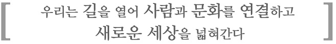
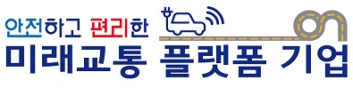
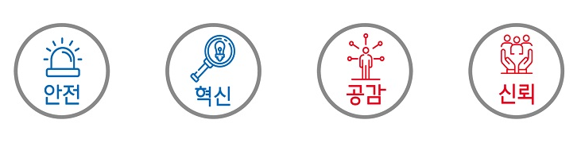
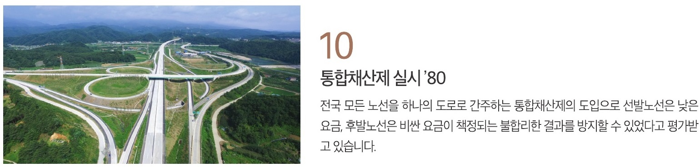
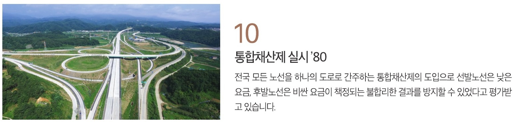

►VISION◄
►VISION◄
►핵심 가치◄

구체화 할 5대 핵심 사업
- 자율주행 선도를 위한 C-ITS 전국 구축 등 고속도로 디지털화 사업 추진
- UAM(Urban Air Mobility) 등 모빌리티 시장의 변화에 맞추어 관련 인프라 구축
- 대도시권 지하고속도로망을 개발 및 타 교통수단과의 연계를 극대화한 복합환승센터 구축
- 고속도로 네트워크를 활용하여 언택트 시대의 물류수요 대응을 위한 스마트 물류센터 구축
- 고속도로 유지관리(O&M), 프로젝트 사업관리(PM), 시공 감리(CM) 등 핵심역량을 활용한 해외사업 추진
 
